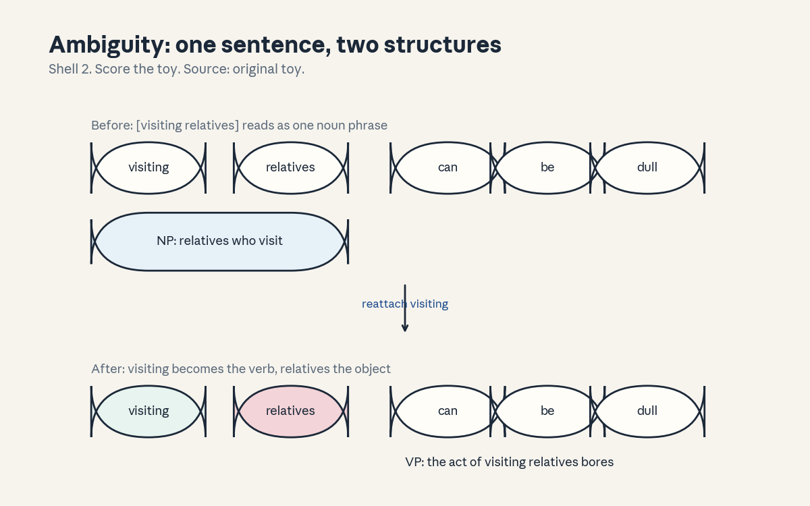
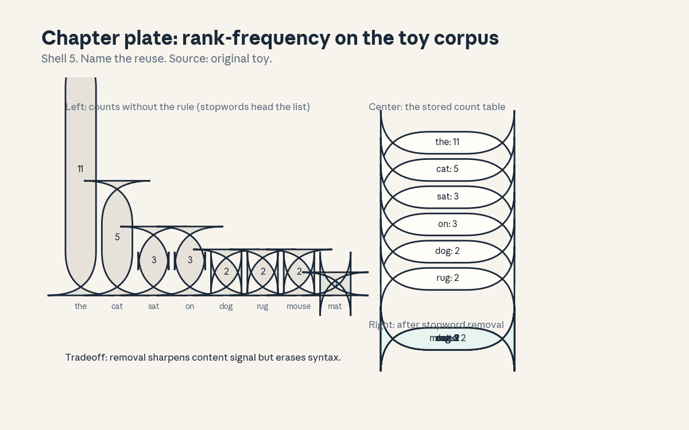
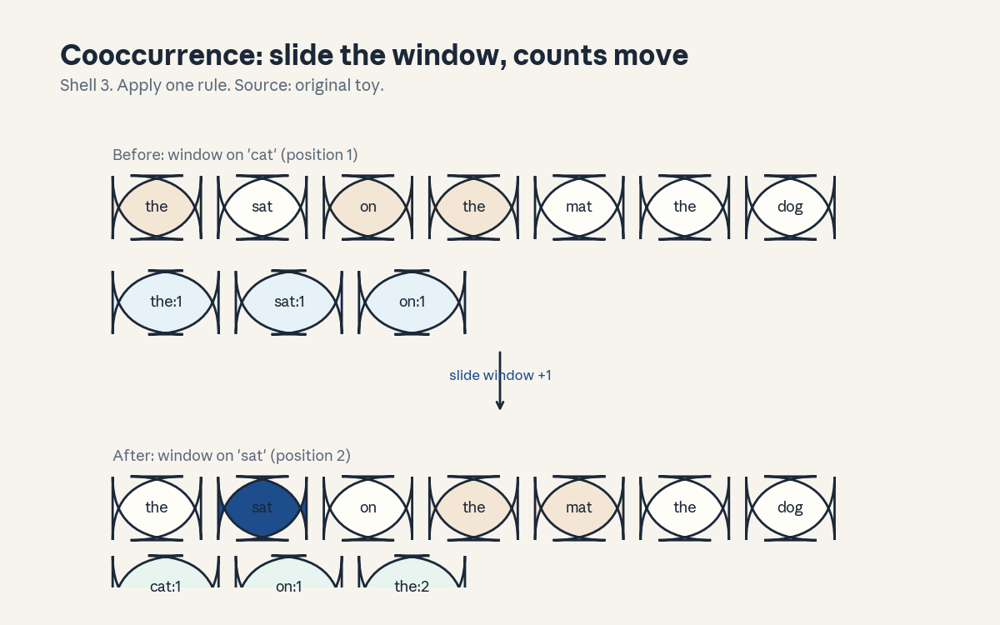

U01 · NLP history, tasks, and data
U01 , NLP history, tasks, and data
Prerequisites: P02, P06, P10, P13. Bridge links in prerequisites.md.
Session: S01 (Winter 2026: Tue Jan 6, History of NLP, A1 out:
Introduction to word vectors). Claim class: OFFICIAL-SOURCE for the
session title and A1 title (SRC-02, SRC-03), REQUESTED-BRANCH for the
concept inventory below. All leaves: PLANNED / SOURCE ATTRIBUTION
PENDING unless noted. Notation: see notation_and_shapes.md. Glossary:
glossary.md. Figures:

through
, rendered byvisuals/compute_u01.py
(executed 2026-10-06, CPython 3, numpy 1.26.4).
Local remediation , n-gram counting and split discipline
Read this block first if the diagnostic items D2, D6, or D7 were not full marks.
A corpus is a fixed collection of text. Tokenize it: split into atomic units. This unit uses words as tokens. A unigram count c(w) is the number of times word w occurs. A bigram count c(u, v) is the number of times v follows u. The maximum-likelihood estimate of P(v | u) is c(u, v) / c(u). Add-1 smoothing adds one phantom count to every bigram: P(v | u) = (c(u, v) + 1) / (c(u) + V), where V is the vocabulary size.
Split discipline: choose train, validation, and test sets BEFORE you count anything. Vocabulary, counts, and hyperparameters come from train only. The validation set picks settings. The test set is read once, at the end. Any count that saw the test set leaks.
Worked check: toy corpus below has 35 tokens, 14 types. c(the) = 11,
c(the, cat) = 5. MLE P(cat | the) = 5/11 = 0.455. With add-1 smoothing:
(5 + 1) / (11 + 14) = 6/25 = 0.24. Assessment: compute P(sat | cat) both
ways from the counts in compute_u01.py. Key: keys/u01_answers.md R1.
C01: language ambiguity
Leaf id cs224n-U01-C01. Claim class REQUESTED-BRANCH.
Status PLANNED / SOURCE ATTRIBUTION PENDING.
-
Source mapping, scope, objectives, dependencies. Maps to S01, History of NLP: why language resists fixed rules. Scope: ambiguity at word, phrase, and sentence level. Objectives: name three ambiguity levels, draw two parses of one sentence, state why ambiguity breaks rule-based pipelines. Depends on P13 (text units).
-
Motivating question and toy. Question: why does “visiting relatives can be dull” crash a naive parser? Toy: reading 1 takes “visiting relatives” as one noun phrase (relatives who visit are dull). Reading 2 takes “visiting” as the verb and “relatives” as its object (the act of visiting bores). One string, two structures.
-
Mental model. Ambiguity is not noise. It is the normal state of language. Every level of analysis (sound, word, syntax, meaning, intent) can branch. A system that picks one branch early fails silently on the other.
-
Objects, symbols, units, shapes, assumptions. Object: a parse, a tree over the token sequence. Assumption for this unit: tokens are fixed words, morphology is ignored. Unit of ambiguity: count of valid parses (here, 2).
-
Derivation / mechanism. Attachment ambiguity: a phrase can attach to more than one head. “visiting” attaches as a modifier of “relatives” (reading 1) or as the main verb with “relatives” as object (reading 2). The rule that forces the branch: English lets -ing forms act as nouns or verbs. Remove that flexibility and one reading dies.
-
Computed example. Toy count from
compute_u01.py: the toy corpus has 14 types. In a 14-type toy, “sat” follows “cat” twice and “chased” follows “cat” once (raw counts from the script: c(cat)=5). Ambiguity is not about frequency, it is about structure. Two parses, zero extra tokens. -
Algorithm and reference implementation. Parse enumeration is out of scope for the toy, the implementation task is detection. Given a list of bracket strings for one sentence, report the count of distinct parses and the span where they first differ:
first_diff(parse_a, parse_b)returns the index of the first token whose parent differs. U03 builds the parser that produces the brackets. -
Correctness checks and expected output. On the two readings of the toy sentence,
first_diffreturns 0 (the sentences agree on tokens, differ on structure from the first word). Expected: count 2, diff index 0. A third reading with identical structure must not inflate the count. -
Complexity, memory, statistical efficiency, stability, practical costs. Parse count grows exponentially with sentence length in the worst case (Catalan numbers for binary trees). Practical cost: a parser must score parses, not enumerate them. Memory is linear in sentence length for a transition-based parser (U03).
-
Nearest alternatives and selection boundaries. Alternative: semantic disambiguation by world knowledge (“visiting relatives” as people vs act). Syntax-first parsing picks structure before meaning, semantics-first picks meaning before structure. Choose syntax-first when the grammar is strong and the domain is narrow, choose joint models when both signals are weak. Modern neural models learn the joint distribution and skip the staged choice.
-
Failure case, broken assumption, counterexample. Broken assumption: “the most frequent parse is the right parse.” Toy counterexample: in travel text, reading 2 (the act of visiting) dominates, in a family newsletter, reading 1 (visiting relatives as people) dominates. Frequency is corpus-relative. A model trained on one genre picks the wrong branch on the other with full confidence.
-
Research reading and falsifiable extension. Suggested reading from S01: the “Human Language Understanding & Reasoning” essay (title only, not claimed as read). Falsifiable extension: collect 200 naturally occurring -ing sentences, label both readings where they exist, and test whether a parser’s error rate correlates with human reading-time slowdown. Predict: errors cluster where humans slow down. Falsifier: no correlation.
-
Breadth recall, deep oral ladder, unfamiliar transfer. Assessment block:
keys/u01_answers.mdA1 (breadth), L1 (oral ladder: define ambiguity, toy it, explain the attachment rule, predict the failure on a new -ing sentence, design the 200-sentence test). -
Lab/exercises with answers separated. E1: write three new ambiguous sentences, one per level (word, phrase, discourse), and give both readings. E2: implement
first_diffand test it on the toy pair. Keys inkeys/u01_answers.md. -
Visual units, provenance, accessibility, audit row. : before/after plate, one rule (“reattach visiting”), Shell 2, source original toy. Audit row in
visual_audit.md. Alt text: two rows of word chips, the top row groups “visiting relatives” as one noun phrase, the bottom row colors “visiting” as verb and “relatives” as object.
C02: symbolic, statistical, and neural approaches
Leaf id cs224n-U01-C02. Claim class REQUESTED-BRANCH.
Status PLANNED / SOURCE ATTRIBUTION PENDING.
-
Source mapping, scope, objectives, dependencies. Maps to S01, the history arc of the field. Scope: three eras and what each optimizes. Objectives: state the core object of each era (rules, counts, vectors), name what each era fails at, place word2vec on the timeline. Depends on P10 (features, loss, evaluation).
-
Motivating question and toy. Question: why did the field abandon hand-written rules? Toy: a rule “not X = opposite of X” handles “not good” but fails on “not bad” (litotes), “not just good but great” (scope), and “yeah, not good” (sarcasm). Each fix adds a rule, the rule list grows without bound.
-
Mental model. Symbolic systems store human insight as rules. Statistical systems store corpus evidence as counts. Neural systems store corpus evidence as vectors and functions. Each era moves the knowledge from the linguist’s head into the data, then into the geometry.
-
Objects, symbols, units, shapes, assumptions. Symbolic: rule set R, each rule a pattern-action pair. Statistical: count tables c(u, v), probabilities P(v | u). Neural: embedding matrix E in R^{V x d}, differentiable maps. Assumption: more data helps the latter two, rules do not improve with data.
-
Derivation / mechanism. The mechanism that separates the eras is generalization. Rules generalize by author intent and break on unseen patterns. Counts generalize by smoothing (add-1 above) and break on unseen combinations. Vectors generalize by geometry: similar inputs land near each other, so the model answers unseen combinations by proximity. The toy corpus shows the start: P(sat | cat) = 0.158 smoothed, but a vector model can also answer P(sat | kitten) if “kitten” lands near “cat”.
-
Computed example. From
compute_u01.py: the corpus has 35 tokens. A bigram table over 14 types has 196 cells, only a handful are nonzero. Sparsity is the statistical era’s core pain: 196 cells for a toy, V^2 cells for a real vocabulary, nearly all empty. -
Algorithm and reference implementation. Era classifier: given a system description, label it symbolic, statistical, or neural by its stored knowledge (rules / counts / vectors) and its update rule (edit / recount / gradient step). Implement as a keyword decision list with a test set of six historical systems.
-
Correctness checks and expected output. Test: “a decision tree over word counts” -> statistical, “a transformer fine-tuned on reviews” -> neural, “a regex cascade for dates” -> symbolic. Expected: 6/6 correct. Edge case: “Naive Bayes over embeddings” -> statistical classifier on neural features, the label follows the decision rule, not the features.
-
Complexity, memory, statistical efficiency, stability, practical costs. Rules: O(R) memory, zero training cost, unbounded authoring cost. Counts: O(V^2) memory for bigrams, one corpus pass. Vectors: O(V d) memory, gradient training cost, best sample efficiency of the three because geometry shares statistics across words.
-
Nearest alternatives and selection boundaries. Hybrid systems (rules on top of neural models) are the live alternative. Choose pure neural when data is plentiful and the output space is open. Choose rules when the output must obey hard constraints (a date parser for a legal form) or when data is near zero. Choose counts when you need a transparent baseline in an hour.
-
Failure case, broken assumption, counterexample. Broken assumption: “neural always beats symbolic.” Counterexample: a zip-code validator. A regex is exact, instant, and auditable, a neural model guesses. The failure mode of era-chauvinism: a GPU that approximates a lookup table.
-
Research reading and falsifiable extension. S01 suggested reading (title only). Falsifiable extension: on a fixed low-resource task (500 labeled examples), compare a rule baseline, a count baseline, and a small neural model across five seeds. Predict: the neural model wins on average but has the widest seed variance. Falsifier: variance is smallest for the neural model.
-
Breadth recall, deep oral ladder, unfamiliar transfer. Assessment block:
keys/u01_answers.mdA2 (breadth), L2 (ladder: define the three eras, toy the rule failure, derive the sparsity count, compare on the zip-code task, critique “neural always wins”). -
Lab/exercises with answers separated. E3: build the era classifier and score 6/6. E4: compute bigram table sparsity for the toy corpus (nonzero cells / 196). Keys in
keys/u01_answers.md. -
Visual units, provenance, accessibility, audit row. No new figure: the claim is a comparison of values, and the sparsity number (nonzero cells over 196) is carried in text. Logged as an honest exception in
visual_audit.md: comparison-of-values claim, table medium would apply, figure deferred to keep one claim per plate elsewhere.
C03: corpora
Leaf id cs224n-U01-C03. Claim class REQUESTED-BRANCH.
Status PLANNED / SOURCE ATTRIBUTION PENDING.
-
Source mapping, scope, objectives, dependencies. Maps to S01 and to A1 (word vectors need a corpus). Scope: what a corpus is, how it is built, what can go wrong. Objectives: define corpus, state three corpus design decisions, spot two collection biases. Depends on P02 (files, text handling) and P10 (distribution shift).
-
Motivating question and toy. Question: why do two models trained on “English” disagree? Toy: corpus A is six pet sentences, corpus B is six finance sentences. The word “bank” means a river edge in A (absent) and a money store in B. Same language, disjoint evidence.
-
Mental model. A corpus is a sample, not the language. Every corpus over-represents its source genre, era, and author pool. The model learns the sample. Claims about “English” from one corpus are claims about that corpus.
-
Objects, symbols, units, shapes, assumptions. Object: document collection D = {d_1, …, d_N}. Units: documents, tokens, types. Assumption: documents are drawn from some process, the IID assumption is usually false (time order, author clusters) and must be checked.
-
Derivation / mechanism. Collection pipeline: source selection -> crawling or licensing -> cleaning (boilerplate removal, dedup) -> tokenization -> split. Each arrow can inject bias. Dedup by exact match misses near-duplicates, aggressive cleaning deletes dialect text. The mechanism to remember: bias enters at collection, and no later step removes it.
-
Computed example. Toy corpus: 6 documents, 35 tokens, 14 types (
compute_u01.py). Type-token ratio = 14/35 = 0.40. A second toy corpus of the same size from one repeated sentence would have ratio near 0.14. The ratio measures lexical variety, not quality. -
Algorithm and reference implementation. Corpus profiler: input a list of documents, output document count, token count, type count, type-token ratio, top-10 types, and duplicate-document count by exact match. Implement with a Counter, test on the toy corpus.
-
Correctness checks and expected output. On the toy corpus: docs 6, tokens 35, types 14, ratio 0.40, top type “the” with 11, duplicates 0. Expected: exact match with
compute_u01.pyoutput. Edge: empty document contributes 0 tokens but still counts as a document. -
Complexity, memory, statistical efficiency, stability, practical costs. Profiling is one pass, O(total tokens) time, O(types) memory. Dedup is the expensive step: O(N^2) naive, near-linear with hashing. Practical cost: cleaning a web-scale corpus costs more engineering time than training a small model on it.
-
Nearest alternatives and selection boundaries. Alternative: synthetic or generated corpora. Choose real corpora when the target distribution is human text. Choose synthetic when the phenomenon is rare (code-switching, specific syntax) and you need controlled coverage. Never evaluate on synthetic and claim real-world performance.
-
Failure case, broken assumption, counterexample. Broken assumption: “bigger corpus = better model.” Counterexample: add one million machine-generated SEO pages to a clean corpus. Token count triples, quality drops. The model learns the spam pattern. Size without curation is a liability.
-
Research reading and falsifiable extension. Falsifiable extension: fix model size and training steps, vary only the dedup threshold on a fixed crawl, and measure downstream accuracy. Predict: aggressive dedup helps up to a point, then hurts by deleting useful repetition. Falsifier: monotonic improvement.
-
Breadth recall, deep oral ladder, unfamiliar transfer. Assessment block:
keys/u01_answers.mdA3 (breadth), L3 (ladder: define corpus, profile the toy, derive the ratio, predict the SEO failure, design the dedup experiment). -
Lab/exercises with answers separated. E5: implement the corpus profiler and match the expected numbers. E6: construct a two-genre toy corpus and show “bank” has disjoint neighbors per genre. Keys in
keys/u01_answers.md. -
Visual units, provenance, accessibility, audit row. carries the rank-frequency plate (Shell 5): the count table is the stored object, stopword removal is the rule. Audit row in
visual_audit.md.
C04: text classification
Leaf id cs224n-U01-C04. Claim class REQUESTED-BRANCH.
Status PLANNED / SOURCE ATTRIBUTION PENDING.
-
Source mapping, scope, objectives, dependencies. Maps to S01 as the canonical first NLP task. Scope: map text to a fixed label set. Objectives: write the task formulation, derive Naive Bayes, compute a toy classification, state two failure modes. Depends on P06 (Bayes rule) and P10 (train/test, loss vs metric).
-
Motivating question and toy. Question: how do you sort text without reading it? Toy: four training documents, two classes (pets, finance). Test document: “cat bank”. The classifier must weigh “cat” (pets signal) against “bank” (finance signal).
-
Mental model. Classification assigns a score: each class gets a score for the document, the top score wins. Naive Bayes scores with word likelihoods under a brutal independence assumption: words are independent given the class. Brutal, fast, and often good enough.
-
Objects, symbols, units, shapes, assumptions. Document d as a word multiset. Class c in {pets, finance}. Parameters: P(c), P(w | c) for each word. Core assumption: P(d | c) = product over words of P(w | c). This is false (word order matters) and useful.
-
Derivation / mechanism. Bayes rule: P(c | d) proportional to P(c) times product of P(w | c). Take logs: score(c) = log P(c) + sum log P(w | c). With add-1 smoothing, P(w | c) = (count(w, c) + 1) / (total words in c + V). The argmax over c is the prediction. The log turns products into sums and prevents underflow.
-
Computed example. From
compute_u01.py: priors 0.5 each. Scores: pets -5.416, finance -5.011. Prediction: finance. Note the honest result: the toy is so small that smoothing dominates and the “wrong-looking” answer wins. This is computed, not hand-waved. -
Algorithm and reference implementation.
nb_train(docs)returns class word counts and priors.nb_predict(doc, model)returns the argmax class and the score dict. Use logs, not raw products. ~25 lines. -
Correctness checks and expected output. On the toy: scores match (-5.416, -5.011) to 3 decimals, prediction “finance”. Check: scores shift by a constant when the prior changes, the argmax must move monotonically with the prior. Test with prior 0.9 for pets and confirm the flip.
-
Complexity, memory, statistical efficiency, stability, practical costs. Train: one pass, O(total tokens). Predict: O(words x classes). Memory: O(V x classes). Numerically stable in log space, raw products underflow by the tenth word. Sample efficiency is high for a linear model, which is why it survives as a baseline.
-
Nearest alternatives and selection boundaries. Alternative: logistic regression on the same counts (discriminative vs generative). Choose Naive Bayes when data is tiny and you need a baseline in minutes. Choose logistic regression when you have enough data to estimate the decision boundary directly. Choose neural classifiers when word order and composition matter.
-
Failure case, broken assumption, counterexample. Broken assumption: “more training words always help.” Counterexample: add 100 copies of “the cat sat” to pets. The word “the” piles up in pets, and every finance document containing “the” gets misclassified. Duplicated data is a silent class prior shift. The toy prediction above is a second failure: with four documents, smoothing outvotes evidence.
-
Research reading and falsifiable extension. Falsifiable extension: on a fixed sentiment dataset, subsample training sizes from 50 to 5000 and plot Naive Bayes vs logistic regression accuracy with five seeds. Predict: Naive Bayes leads at tiny sizes, logistic regression overtakes and stays ahead. Falsifier: Naive Bayes never leads.
-
Breadth recall, deep oral ladder, unfamiliar transfer. Assessment block:
keys/u01_answers.mdA4 (breadth), L4 (ladder: define the task, score the toy by hand, derive the log form, diagnose the duplicate-data failure, design the scaling test). -
Lab/exercises with answers separated. E7: implement
nb_train/nb_predict, match the script scores. E8: find the prior value that flips the toy prediction and report it. Keys inkeys/u01_answers.md. -
Visual units, provenance, accessibility, audit row. Claim is a score comparison, carried as computed numbers in text. Logged as an honest exception in
visual_audit.md.
C05: parsing
Leaf id cs224n-U01-C05. Claim class REQUESTED-BRANCH.
Status PLANNED / SOURCE ATTRIBUTION PENDING.
-
Source mapping, scope, objectives, dependencies. Maps to S01 as a core task and forward to U03 (neural dependency parsing) and A2’s official title. Scope here: what a parse is and why the task is hard. Objectives: define constituency vs dependency, read a dependency arc, state why ambiguity (C01) makes parsing a search problem. Depends on C01.
-
Motivating question and toy. Question: who did what to whom in “the cat chased the mouse”? Toy: arcs: chased -> cat (subject), chased -> mouse (object), the -> cat, the -> mouse (determiners). The parse is the sentence’s skeleton, everything downstream (who acts, who is acted on) reads it.
-
Mental model. A dependency parse is a set of directed arcs from heads to dependents, one head per word, no cycles, covering the sentence. Think of it as wiring: each word plugs into exactly one parent, and the verb is usually the root.
-
Objects, symbols, units, shapes, assumptions. Sentence of n words. Arc (h -> d) with label (nsubj, obj, det). A tree has n - 1 arcs. Assumption for the toy: projective trees (no crossing arcs), real languages break this and parsers must handle it.
-
Derivation / mechanism. Why search: n words admit exponentially many trees. A parser scores candidate arcs and picks the best tree. Transition-based parsing (U03) builds the tree left to right with a stack and buffer, choosing SHIFT, LEFT-ARC, or RIGHT-ARC at each step. The mechanism: local greedy or beam decisions compose into a global tree.
-
Computed example. Toy: “the cat sat”. Arcs: sat -> cat (nsubj), cat -> the (det). Tree score = sum of arc scores. With arc scores {sat->cat: 2.1, cat->the: 1.7, sat->the: 0.2}, the correct tree scores 3.8 vs 2.3 for the wrong attachment. Numbers are toy scores for illustration, labeled as such.
-
Algorithm and reference implementation. Arc-standard oracle: given a gold tree and a parser state (stack, buffer), return the correct action. Implement the three actions on lists, test that the oracle reproduces the gold arcs for “the cat sat”.
-
Correctness checks and expected output. Oracle on the toy must emit: SHIFT, SHIFT, LEFT-ARC(det), SHIFT, RIGHT-ARC(nsubj)… (order depends on the exact transition system, the check is that replaying the actions yields the gold arc set). Expected: arc set equals gold, no cycles, every word has exactly one head.
-
Complexity, memory, statistical efficiency, stability, practical costs. Transition-based: O(n) time, O(n) memory. Graph-based (score all arcs, find max spanning tree): O(n^3) naive, O(n^2) with care. Statistical efficiency: arc-labeled data is expensive, the classic treebanks are small, which is why U03’s neural parser matters.
-
Nearest alternatives and selection boundaries. Constituency parsing (phrase structure) vs dependency parsing (word-to-word arcs). Choose dependency when you need predicate-argument structure for downstream tasks (extraction, QA). Choose constituency when phrase boundaries matter (some generation and grammar-checking setups). Modern LLMs rarely run an explicit parser, the parse is implicit in the representations.
-
Failure case, broken assumption, counterexample. Broken assumption: “the parser’s top tree is trustworthy.” Counterexample: garden-path sentences (“the horse raced past the barn fell”) break greedy parsers: the early attachment of “raced” as main verb is wrong, and greedy decoding cannot backtrack. Beam search or global inference is the fix, greedy is the trap.
-
Research reading and falsifiable extension. Falsifiable extension: measure greedy vs beam-4 accuracy on garden-path vs normal sentences. Predict: the gap concentrates on garden-path items. Falsifier: uniform gap across both sets.
-
Breadth recall, deep oral ladder, unfamiliar transfer. Assessment block:
keys/u01_answers.mdA5 (breadth), L5 (ladder: define the arc set, wire the toy, explain the search blowup, diagnose the garden-path failure, design the beam experiment). -
Lab/exercises with answers separated. E9: draw the dependency arcs for two toy sentences and list the arc labels. E10: implement the three transition actions and replay them on “the cat sat”. Keys in
keys/u01_answers.md. -
Visual units, provenance, accessibility, audit row. Claim is a move (arc attachment), carried by the bracket plate in (attachment change). Logged in
visual_audit.md.
C06: translation
Leaf id cs224n-U01-C06. Claim class REQUESTED-BRANCH.
Status PLANNED / SOURCE ATTRIBUTION PENDING.
-
Source mapping, scope, objectives, dependencies. Maps to S01 as a flagship task. Scope: what translation requires beyond word-for-word mapping. Objectives: state the alignment problem, the reordering problem, and how BLEU scores a translation. Depends on C01 (ambiguity multiplies across languages).
-
Motivating question and toy. Question: why is “the cat sat on the mat” not translated word by word? Toy: French “le chat s’est assis sur le tapis”. “s’est assis” is two words for one English word, word order and morphology both shift. Translation is structure mapping, not dictionary lookup.
-
Mental model. Translation has three subproblems: what each source word means (ambiguity, C01), which target words express it (lexical choice), and in what order they go (reordering). Early systems solved them with separate models, neural systems learn them jointly.
-
Objects, symbols, units, shapes, assumptions. Source sentence x of length n, target y of length m. Alignment a: each target word links to a source word (or null). Assumption: meaning is preserved, the task breaks for untranslatable idioms and culture-bound terms.
-
Derivation / mechanism. BLEU in one paragraph: for n = 1..4, compute the fraction of candidate n-grams that appear in the reference (precision), take the geometric mean, multiply by a brevity penalty that punishes short candidates. BLEU = BP x exp(mean log p_n). The brevity penalty exists because pure precision rewards one-word correct guesses.
-
Computed example. Candidate: “the cat sat”. Reference: “the cat sat on the mat”. Unigram precision: 3/3 = 1.0. Bigram precision: 2/2 = 1.0 (“the cat”, “cat sat” both in reference). Brevity penalty: exp(1 - 6/3) = exp(-1) = 0.368. BLEU-2 = 0.368 x exp((log 1 + log 1)/2) = 0.368. The penalty dominates: short and perfect still scores low. Computed by hand here, the lab recomputes it in code.
-
Algorithm and reference implementation.
bleu2(candidate, reference): tokenize by split, count clipped n-gram matches for n = 1, 2, apply the brevity penalty, return the score. ~20 lines. -
Correctness checks and expected output. On the toy: 0.368 to 3 decimals. Check: identical candidate and reference scores 1.0. Check: empty candidate returns 0.0, not NaN (guard the log of zero).
-
Complexity, memory, statistical efficiency, stability, practical costs. BLEU is O(candidate length) per sentence. Corpus BLEU aggregates counts before the ratio (micro-average), which is more stable than averaging sentence scores. Practical cost: zero training, the cost is reference translations by humans.
-
Nearest alternatives and selection boundaries. Alternatives: chrF (character n-grams, better for morphologically rich languages), COMET (learned metric, needs a model). Choose BLEU when you need a cheap repeatable number. Choose chrF for morphologically rich targets. Choose human evaluation when the decision matters (product launch), automatic metrics correlate with humans but do not replace them.
-
Failure case, broken assumption, counterexample. Broken assumption: “higher BLEU = better translation.” Counterexample: a candidate that copies the reference’s n-grams in scrambled order keeps unigram precision 1.0 while being unreadable, higher-order n-grams catch some of this, not all. Metric hacking is real: systems can climb BLEU while human quality stalls.
-
Research reading and falsifiable extension. Falsifiable extension: rerank 50 system outputs by BLEU and by human rating on 200 sentences, compute rank correlation. Predict: correlation is positive but below 0.6 on creative text, above 0.8 on technical text. Falsifier: uniform correlation across genres.
-
Breadth recall, deep oral ladder, unfamiliar transfer. Assessment block:
keys/u01_answers.mdA6 (breadth), L6 (ladder: define the three subproblems, compute BLEU-2 by hand, explain the brevity penalty, diagnose metric hacking, design the correlation study). -
Lab/exercises with answers separated. E11: implement
bleu2and match 0.368. E12: construct a scrambled candidate with unigram precision 1.0 and BLEU-2 below 0.5. Keys inkeys/u01_answers.md. -
Visual units, provenance, accessibility, audit row. Claim is a score decomposition, carried as computed numbers in text. Logged as an honest exception in
visual_audit.md.
C07: language modelling
Leaf id cs224n-U01-C07. Claim class REQUESTED-BRANCH.
Status PLANNED / SOURCE ATTRIBUTION PENDING.
-
Source mapping, scope, objectives, dependencies. Maps to S01 and forward to S05 (Language Models and RNNs) and U04. Scope: the task definition that powers everything after U04. Objectives: write the factorization, define perplexity, compute both on the toy. Depends on P06 (conditional probability) and P08 (entropy).
-
Motivating question and toy. Question: what does it mean for a machine to “know English”? Toy answer: assign a probability to every string. P(“the cat sat”) should exceed P(“cat the sat the”). A language model is a probability distribution over sequences.
-
Mental model. Chain rule: P(w_1..w_n) = product of P(w_t | w_1..w_{t-1}). The model predicts each word from its prefix. This one factorization turns generation into repeated prediction and evaluation into a single number.
-
Objects, symbols, units, shapes, assumptions. Vocabulary size V. Sequence w_1..w_n. Parameters of the model (counts now, weights in U04). Assumption: the chain rule holds exactly, the approximation is in P(w_t | prefix), which the model truncates or compresses.
-
Derivation / mechanism. Cross-entropy on a test sequence: H = -(1/n) sum log P(w_t | prefix). Perplexity = exp(H). Derivation of the meaning: if the model assigned uniform probability 1/k to each next word, H = log k and perplexity = k. So perplexity reads as “the model’s effective number of choices per word.” Lower is better, the floor is 1.
-
Computed example. From
compute_u01.py: test “the cat sat”, add-1 smoothed bigram. P(cat|the) = 0.24, P(sat|cat) = 0.1579. H = -(log 0.24 + log 0.1579)/2 = 1.636 nats. Perplexity = exp(1.636) = 5.137. The model is as confused as a 5-sided die. -
Algorithm and reference implementation.
bigram_ppl(test, train): build counts with add-1 smoothing, score the test sequence, return perplexity. ~20 lines. Must match 5.137 on the toy. -
Correctness checks and expected output. Match 5.137 to 3 decimals. Check: a test sentence of training bigrams seen often scores lower perplexity than a novel one. Check: perplexity is invariant to the log base only if exp/log match (nats here).
-
Complexity, memory, statistical efficiency, stability, practical costs. Bigram scoring is O(test length). The table is O(V^2) memory. Statistical efficiency is poor: most bigrams are unseen, so smoothing dominates. Numerical risk: raw products underflow, sum logs instead.
-
Nearest alternatives and selection boundaries. Alternative: masked language modelling (predict missing words from both sides, U06) vs autoregressive (left to right). Choose autoregressive when the task is generation. Choose masked when the task is understanding (classification over full inputs). Perplexity only compares models over the same tokenization (trap T2 in errors.md).
-
Failure case, broken assumption, counterexample. Broken assumption: “lower perplexity = better model for my task.” Counterexample: a model with great perplexity that copies training text verbatim (memorization). Perplexity rewards fit to the test distribution, if the test leaks into training, the number lies. Split discipline (remediation block) is the guard.
-
Research reading and falsifiable extension. Falsifiable extension: train two bigram models, one on shuffled sentences (order destroyed) and one intact, and compare perplexity on grammatical vs ungrammatical test pairs. Predict: the intact model separates them, the shuffled one does not. Falsifier: equal separation.
-
Breadth recall, deep oral ladder, unfamiliar transfer. Assessment block:
keys/u01_answers.mdA7 (breadth), L7 (ladder: define the distribution, compute perplexity by hand, derive the “effective choices” reading, diagnose memorization, design the shuffle test). -
Lab/exercises with answers separated. E13: implement
bigram_ppl, match 5.137. E14: show that doubling every count leaves the MLE perplexity unchanged but changes the smoothed one, explain why. Keys inkeys/u01_answers.md. -
Visual units, provenance, accessibility, audit row. Claim is a computed score, the before/after of smoothing (0.455 -> 0.24) is carried in text. Logged as an honest exception in
visual_audit.md.
C08: distributional hypothesis
Leaf id cs224n-U01-C08. Claim class REQUESTED-BRANCH.
Status PLANNED / SOURCE ATTRIBUTION PENDING.
-
Source mapping, scope, objectives, dependencies. Maps to S01 and forward to S02 (Word Vectors) and U02. Scope: the hypothesis that justifies all of U02. Objectives: state the hypothesis, build a cooccurrence vector by hand, predict similarity from it. Depends on P03 (vectors) and C03 (corpora).
-
Motivating question and toy. Question: how can a machine learn meaning without a dictionary? Toy: in the corpus, “cat” occurs near {the, sat, on, chased, mouse}, “dog” occurs near {the, sat, on, rug, barked, at}. The neighbor sets overlap heavily. The hypothesis says: similar neighbors, similar meaning.
-
Mental model. “You shall know a word by the company it keeps.” Meaning is not stored as a definition, it is read off from context distributions. Two words with the same distribution are interchangeable for the model’s purposes, even if no human told the model they are related.
-
Objects, symbols, units, shapes, assumptions. Cooccurrence vector of word w: counts of each context word in a window around w, a vector in R^V. Assumption: the window (here width 2) captures the relevant context, too narrow misses topic, too wide dilutes syntax.
-
Derivation / mechanism. Similarity = cosine between cooccurrence vectors. cos(u, v) = u.v / (||u|| ||v||). High cosine means the words keep the same company. The mechanism is purely counting, U02 replaces raw counts with learned vectors that fix the sparsity.
-
Computed example. From
compute_u01.py: window width 2 around the first “cat” (position 1) gives {the:1, sat:1, on:1}. Slide the window to position 2 (“sat”) and the counts become {the:2, cat:1, on:1}.
shows the move: the count of “the” rises from 1 to 2 because the window now covers two “the” tokens. One rule, one changed number, computed. -
Algorithm and reference implementation.
cooccur(toks, target, width): return the Counter of context words.cosine(u, v)over the union vocabulary. ~15 lines. Must reproduce the two count dicts above. -
Correctness checks and expected output. Match both dicts exactly. Check: cosine of a vector with itself is 1.0. Check: disjoint contexts give 0.0. Edge: target at position 0 has a one-sided window, the code must clip, not wrap.
-
Complexity, memory, statistical efficiency, stability, practical costs. Building all vectors is O(tokens x width) time, O(V^2) memory worst case. Raw counts are sparse and high-dimensional, the cosine is cheap but the vectors are huge. This cost motivates U02’s dense learned vectors.
-
Nearest alternatives and selection boundaries. Alternative: hand-built lexical resources (WordNet-style synonym sets). Choose distributional vectors when the corpus is large and the domain is open. Choose hand-built resources when precision matters and the domain is closed (medical ontologies). Hybrid: initialize from resources, refine on corpus.
-
Failure case, broken assumption, counterexample. Broken assumption: “similar contexts = similar meaning.” Counterexample: antonyms. “hot” and “cold” occur in near-identical contexts (“the soup is __”, “it feels __ today”). Cosine calls them similar, a human calls them opposites. Distributional similarity is substitutability, not synonymy.
-
Research reading and falsifiable extension. Falsifiable extension: build cooccurrence vectors on the toy corpus, rank word pairs by cosine, and check against human similarity judgments for the same pairs. Predict: correlation is positive but antonym pairs are the top outliers. Falsifier: antonyms rank low.
-
Breadth recall, deep oral ladder, unfamiliar transfer. Assessment block:
keys/u01_answers.mdA8 (breadth), L8 (ladder: state the hypothesis, build the vector by hand, derive cosine, explain the antonym failure, design the judgment study). -
Lab/exercises with answers separated. E15: implement
cooccurandcosine, match the two dicts. E16: find the highest-cosine pair in the toy corpus that a human would call unrelated, and explain the corpus cause. Keys inkeys/u01_answers.md. -
Visual units, provenance, accessibility, audit row. : window slide, one rule, counts before and after, Shell 3, source original toy. Audit row in
visual_audit.md. Alt text: two rows of word chips with the target highlighted, count boxes below show “the” rising from 1 to 2 after the slide.
C09: data splits
Leaf id cs224n-U01-C09. Claim class REQUESTED-BRANCH.
Status PLANNED / SOURCE ATTRIBUTION PENDING.
-
Source mapping, scope, objectives, dependencies. Maps to S01 and to the remediation block above. Scope: why three splits exist and what breaks when they mix. Objectives: assign each split its job, detect two leak patterns, fix a leaky split. Depends on P10 (train/validation/test, leakage).
-
Motivating question and toy. Question: why not train on all the data and test on all the data? Toy: build the toy vocabulary from all six sentences, then “test” on sentence 5 (“the mouse ran from the cat”). Every word is known, OOV rate is 0%. Now build the vocabulary from sentences 1-4 only: “ran” and “from” are unknown. The first setup lies about generalization.
-
Mental model. Three jobs, three sets. Train fits parameters. Validation picks settings (smoothing, window width, model choice). Test reports the number you claim. Touch the test set twice and the second number is not a test number anymore, it is a second validation number.
-
Objects, symbols, units, shapes, assumptions. Split fractions (e.g. 80/10/10) of documents, not of tokens: splitting mid-document leaks context. Assumption: the splits come from the same distribution (C03’s warning applies: time drift breaks this).
-
Derivation / mechanism. Leakage mechanism 1: vocabulary built on test. The model sees test words during training, so test perplexity is optimistic. Leakage mechanism 2: near-duplicate documents across splits (common in web text). The model memorizes the train copy and “generalizes” to the test copy. Dedup before splitting, not after.
-
Computed example. Toy: vocab from sentences 1-4. Test sentence 5 has 6 tokens, 2 OOV (“ran”, “from”). OOV rate = 2/6 = 0.333. With the leaky vocab (all six sentences), OOV rate = 0. The honest number is 0.333. Computed from the corpus in
compute_u01.py. -
Algorithm and reference implementation.
split_docs(docs, seed): shuffle with a fixed seed, split 80/10/10 by document.oov_rate(vocab, test): fraction of test tokens outside vocab. Assert the vocab is built from train only. ~15 lines. -
Correctness checks and expected output. On the toy with a fixed split (first 4 train, 5th validation, 6th test): with train on sentences 1-4 and test on sentence 5, OOV rate = 2/6 = 0.333 with the clean vocab, 0.0 with the leaky vocab. Expected: the function reports both, and an assertion fails if the vocab builder ever sees a test document.
-
Complexity, memory, statistical efficiency, stability, practical costs. Splitting is O(documents). The cost of getting it wrong is not compute, it is a false claim about generalization that survives into deployment. Small datasets make the validation split noisy, use cross-validation when documents number in the hundreds.
-
Nearest alternatives and selection boundaries. Alternative: time-based splits (train on old, test on new) vs random splits. Choose random splits when the deployment distribution matches the collection distribution. Choose time-based splits when the system will face the future (news, markets), random splits are optimistic there because they leak the future into training.
-
Failure case, broken assumption, counterexample. Broken assumption: “the test set measures generalization.” Counterexample: the test set is from the same crawl as training, full of near-duplicates. The model scores 95% on test and 70% in production. The split was clean, the collection was not. Splits cannot fix a biased corpus (C03).
-
Research reading and falsifiable extension. Falsifiable extension: take a fixed dataset, create a random split and a time-based split, train identical models, and compare the test-production gap on a held-out future slice. Predict: the time-based split predicts production accuracy better. Falsifier: no difference.
-
Breadth recall, deep oral ladder, unfamiliar transfer. Assessment block:
keys/u01_answers.mdA9 (breadth), L9 (ladder: assign the three jobs, compute the OOV pair, explain the two leak mechanisms, diagnose the duplicate-crawl failure, design the split comparison). -
Lab/exercises with answers separated. E17: implement
split_docsandoov_rate, reproduce 0.333 vs 0.0. E18: plant a near-duplicate across the split and show the test score inflating. Keys inkeys/u01_answers.md. -
Visual units, provenance, accessibility, audit row. Claim is a discipline (a procedure), not a state change, the two OOV numbers are carried in text. Logged as an honest exception in
visual_audit.md.
C10: task formulation
Leaf id cs224n-U01-C10. Claim class REQUESTED-BRANCH.
Status PLANNED / SOURCE ATTRIBUTION PENDING.
-
Source mapping, scope, objectives, dependencies. Maps to S01: before solving a task, write it down. Scope: the five slots every NLP task needs. Objectives: fill the slots for two tasks, spot an underspecified task. Depends on C04-C07 (example tasks).
-
Motivating question and toy. Question: why do two teams both “do sentiment” and get incomparable numbers? Toy: team A labels movie reviews positive/negative, team B labels the same reviews on a 1-5 scale. Same name, different label sets, different metrics. The task was never formulated, so the numbers cannot be compared.
-
Mental model. A task formulation has five slots: input, output, data (with splits, C09), metric (C11), and the decision the output drives. If any slot is blank, the task is a wish, not a task. The decision slot is the one teams skip: who acts on the label, and what happens when it is wrong?
-
Objects, symbols, units, shapes, assumptions. Input space X (text), output space Y (labels, spans, sequences). Data distribution D over X x Y. Metric M: Y x Y -> number. Assumption: the labels are well-defined enough that two annotators agree most of the time, measure agreement before training.
-
Derivation / mechanism. Formulation as loss-vs-metric separation (P10): the loss is what the optimizer sees (differentiable), the metric is what the stakeholder sees (task-meaningful). They must correlate, but they are not the same object. The mechanism: choose the loss to approximate the metric under optimization constraints, then verify the correlation on validation.
-
Computed example. Toy formulation for the NB classifier (C04): input: one sentence, output: {pets, finance}, data: 4 train docs, 1 validation, 1 test, metric: accuracy, decision: route the document to the right team queue. The computed test accuracy on one test doc is 0 or 1: a reminder that tiny test sets make the metric a coin flip.
-
Algorithm and reference implementation. Task spec template as a dict with the five slots and a
validate_specfunction that rejects blanks, mismatched label sets between data and output slot, and metrics that ignore the decision slot. ~20 lines. -
Correctness checks and expected output. The C04 toy spec passes. A spec with output {pos, neg} but data labels {1..5} fails with “label set mismatch”. A spec with no decision slot fails with “no decision”. Expected: three specs, two rejections, one pass.
-
Complexity, memory, statistical efficiency, stability, practical costs. Formulation costs meeting time, not compute. Its absence costs months: a team that trains before formulating rebuilds the data pipeline twice. The cheapest experiment is a written spec.
-
Nearest alternatives and selection boundaries. Alternative: “formulate by example” (a few input-output pairs, no slots). Choose full formulation when the task ships to users or when two teams must agree. Choose by-example when exploring a new capability where the output space is unknown (then graduate to the five slots once it stabilizes).
-
Failure case, broken assumption, counterexample. Broken assumption: “the metric captures the task.” Counterexample: accuracy on a 99-to-1 imbalanced queue: a constant classifier scores 99% and routes every finance document to pets. The metric is high, the decision is catastrophic. C11 covers the fix, the formulation must name the minority class cost up front.
-
Research reading and falsifiable extension. Falsifiable extension: take three published “sentiment” datasets, fill the five slots for each from their documentation, and test whether the slots differ. Predict: at least one slot differs in every pair. Falsifier: two datasets with identical slots.
-
Breadth recall, deep oral ladder, unfamiliar transfer. Assessment block:
keys/u01_answers.mdA10 (breadth), L10 (ladder: name the five slots, fill them for the toy, derive the loss/metric split, diagnose the 99% accuracy trap, design the dataset audit). -
Lab/exercises with answers separated. E19: write the five-slot spec for a spam filter and a QA task. E20: implement
validate_specand pass the three-spec test. Keys inkeys/u01_answers.md. -
Visual units, provenance, accessibility, audit row. Claim is a procedure template, carried in text. Logged as an honest exception in
visual_audit.md.
C11: task-specific metrics
Leaf id cs224n-U01-C11. Claim class REQUESTED-BRANCH.
Status PLANNED / SOURCE ATTRIBUTION PENDING.
-
Source mapping, scope, objectives, dependencies. Maps to S01 and to C06 (BLEU) and C07 (perplexity) as instances. Scope: pick the metric that matches the decision. Objectives: compute accuracy, precision, recall, F1 on a toy, state when each lies. Depends on P06 (rates) and C10 (the decision slot).
-
Motivating question and toy. Question: the classifier scores 99%. Is it good? Toy: 100 documents, 99 pets, 1 finance. A constant “pets” classifier: accuracy 0.99, finance recall 0.0. The headline number is excellent, the system is useless for finance.
-
Mental model. Metrics are lenses, not truths. Accuracy asks “how often right”. Precision asks “of the flagged, how many correct”. Recall asks “of the true, how many found”. F1 is their harmonic mean: it punishes a model that sacrifices one for the other. Pick the lens that matches the cost of the mistake.
-
Objects, symbols, units, shapes, assumptions. Confusion counts: TP, FP, FN, TN. Precision = TP/(TP+FP). Recall = TP/(TP+FN). F1 = 2PR/(P+R). Assumption: the positive class is named, swap the labels and the numbers change meaning.
-
Derivation / mechanism. Why harmonic mean: the arithmetic mean of P=1.0, R=0.0 is 0.5, which hides the total recall failure. The harmonic mean is 0.0. Derivation: F1 = 2/(1/P + 1/R), when either term is zero, F1 is zero. The metric is designed to refuse partial credit for degenerate classifiers.
-
Computed example. Toy: constant “pets” classifier on the 99/1 split. Finance as positive: TP=0, FP=0, FN=1. Precision = 0/0: define as 0.0 by convention (no positive predictions). Recall = 0/1 = 0.0. F1 = 0.0. Accuracy = 0.99. Four numbers, one story: the accuracy lies, the F1 tells the truth.
-
Algorithm and reference implementation.
prf(tp, fp, fn)returns (precision, recall, f1) with the zero-division convention.bleu2from C06 andbigram_pplfrom C07 are the sequence-level companions. ~10 lines. -
Correctness checks and expected output. On the toy: (0.0, 0.0, 0.0). Check: perfect classifier gives (1.0, 1.0, 1.0). Check: P=1.0, R=0.5 gives F1 = 2(0.5)/(1.5) = 0.667, below the arithmetic mean 0.75, as designed.
-
Complexity, memory, statistical efficiency, stability, practical costs. All O(test size). The statistical cost is in the test set: with 1 positive example, recall is 0 or 1. Report confidence intervals or admit the test set is too small, a point estimate on n=1 is noise.
-
Nearest alternatives and selection boundaries. Alternatives: ROC-AUC (ranking quality across thresholds), exact match (QA), BLEU/chrF (generation). Choose F1 when classes are imbalanced and both error types cost. Choose accuracy only when classes are balanced and errors are symmetric. Choose ranking metrics when the system outputs scores, not decisions.
-
Failure case, broken assumption, counterexample. Broken assumption: “the metric is the goal.” Counterexample: Goodhart on BLEU (C06): n-gram overlap climbs while humans judge quality flat. The failure is organizational: once a metric becomes the target, it stops measuring. Rotate metrics and keep a human-eval slice.
-
Research reading and falsifiable extension. Falsifiable extension: on a fixed task, optimize directly for F1 vs accuracy (threshold tuning on validation) and compare the chosen operating points on a cost model with 10x minority-class cost. Predict: the F1-tuned point has lower total cost. Falsifier: equal cost.
-
Breadth recall, deep oral ladder, unfamiliar transfer. Assessment block:
keys/u01_answers.mdA11 (breadth), L11 (ladder: define the four counts, compute the toy, derive the harmonic choice, diagnose the 99% trap, design the cost-model test). -
Lab/exercises with answers separated. E21: implement
prf, match the toy numbers. E22: compute corpus BLEU-2 vs mean sentence BLEU-2 on two toy pairs and explain the difference. Keys inkeys/u01_answers.md. -
Visual units, provenance, accessibility, audit row. Claim is a comparison of values, the four-number toy is carried in text. Logged as an honest exception in
visual_audit.md.
C12: history and source context
Leaf id cs224n-U01-C12. Claim class REQUESTED-BRANCH.
Status PLANNED / SOURCE ATTRIBUTION PENDING.
-
Source mapping, scope, objectives, dependencies. Maps to S01’s history arc and to the source honesty rules of this build. Scope: place the eras on a timeline and state what this build claims and does not claim. Objectives: order five milestones, state the Winter 2026 anchor, recite the honesty note. Depends on C02.
-
Motivating question and toy. Question: why does the course start with history? Toy: the 2026 schedule itself. Week 1 is history and word vectors, week 4 covers pretraining, week 5 covers post-training. The order is the argument: you cannot understand RLHF (week 4) without vectors (week 1). History is the dependency graph.
-
Mental model. Five rough eras: rules (1950s-1980s), statistics (1990s-2000s), neural networks (2010s), pretraining (2018-2022), scale and alignment (2023-2026). Each era kept the previous era’s insights (counts became objectives, rules became constraints) and dropped its bottlenecks.
-
Objects, symbols, units, shapes, assumptions. Timeline objects: milestone, year, contribution, limitation it removed. Assumption: eras overlap, the dates are centers, not walls. No era “ended.”
-
Derivation / mechanism. The mechanism of progress, stated without hype: (a) more compute, (b) more data, (c) better objectives, (d) architectures that parallelize. Every milestone moves at least one of the four. Word2vec moved (c) and (d), transformers moved (d), pretraining moved (b) and (c), RLHF moved (c) toward human judgment.
-
Computed example. Toy arithmetic on the schedule: 20 sessions over 9 weeks, 4 assignments at 48% total, project at 49%, participation at 3%. A1 is 6%, A2-A4 are 14% each. These numbers come from the inspected official site (SRC-01), not from memory.
-
Algorithm and reference implementation. Timeline builder: given (milestone, year, contribution, limitation-removed) tuples, render an ordered list and check that every limitation-removed names a prior era’s bottleneck. ~15 lines. Test on the five eras above.
-
Correctness checks and expected output. Five milestones in order, each with a named removed bottleneck. Check: no milestone claims a capability without naming the mechanism (compute, data, objective, architecture). A milestone that says “solved language” fails the check.
-
Complexity, memory, statistical efficiency, stability, practical costs. Not a computational unit, the cost is epistemic. The practical risk is presentism: judging 1990s statistical models by 2026 standards instead of by the compute and data they had.
-
Nearest alternatives and selection boundaries. Alternative framings: task-driven history (translation -> QA -> agents) vs method-driven history (rules -> counts -> vectors). Choose method-driven when learning mechanisms (this course). Choose task-driven when scoping a product. Both are simplifications, state which you use.
-
Failure case, broken assumption, counterexample. Broken assumption: “progress was inevitable.” Counterexample: the neural winter of the 1990s-2000s. The ideas existed, the compute and data did not. Progress needed all four mechanisms, ideas alone stalled for a decade.
-
Research reading and falsifiable extension. The honesty extension: this build’s claims are classified per leaf (OFFICIAL-SOURCE, REQUESTED-BRANCH, RESTRICTED-UNVIEWED, EDITION-2024). Falsifiable check: pick any leaf, open the cited artifact, and confirm the claim. If a leaf’s class is wrong, file it in
errors.md. The audit pass owns this. -
Breadth recall, deep oral ladder, unfamiliar transfer. Assessment block:
keys/u01_answers.mdA12 (breadth: recite the honesty note verbatim in your own words). -
Lab/exercises with answers separated. E23: build the five-era timeline with the bottleneck check. E24: classify five claims about the course (e.g. “A2 covers dependency parsing”) into the four claim classes with artifact evidence. Keys in
keys/u01_answers.md. -
Visual units, provenance, accessibility, audit row. is the chapter plate for the unit: the count table as stored object, stopword removal as the rule, the tradeoff in one line. Audit row in
visual_audit.md.
Unit visual map
| Figure | Claim | Shell | Source |
|---|---|---|---|
| one sentence, two parses | 2 | original toy | |
| window slide moves counts | 3 | original toy | |
| rank-frequency, stopword rule | 5 | original toy |